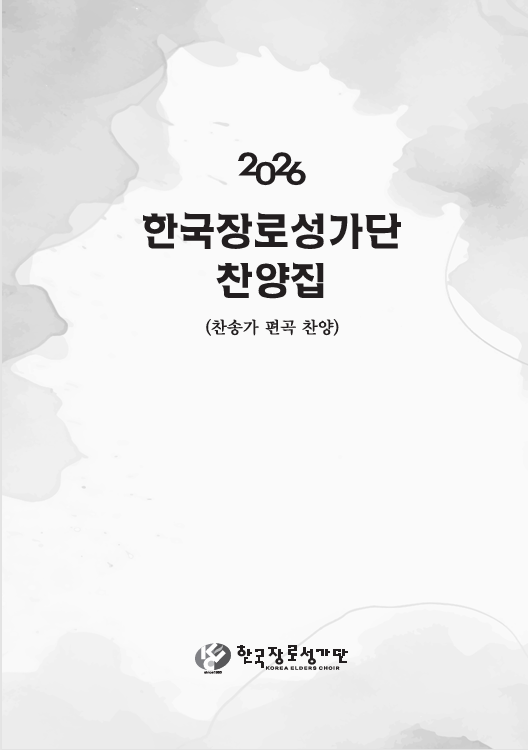

2026 찬양집
PRACTISE ROOM

play
01. 갈 길을 밝히 보이시니
play
02. 내 영혼에 햇빛 비치니
play
03. 내 영혼이 은총 입어
play
04. 다 찬양하여라
play
05. 삼천리 반도 금수강산
play
06. 오직 예수 다른 이름은 없네 *
play
07. 이 몸의 소망 무언가
play
08. 이 세상의 모든 죄를 *
play
09. 주 예수 내 산 소망
play
10. 주 예수 내 맘에 오심
play
11. 주님 약속하신 말씀 위에서
play
12. 주를 앙모하는 자
play
13. 주와 같이 길 가는 것
play
14. 참 아름다워라